Lecture 24: Pangenomics
Learning Objectives
By the end of this lecture, you will be able to:
- Define a pangenome and explain why a single linear reference genome is insufficient
- Distinguish gene-oriented (bacterial) pangenomes from sequence-oriented (graph) pangenomes
- Describe the GFA format and its role in representing sequence graphs
- Explain the PGGB and Minigraph-Cactus pipelines for constructing pangenome graphs
- Discuss applications of pangenomics to bacterial and viral genomics
- Interpret pangenome graph visualizations produced by
odgiand Sequence Tube Maps
1. Why Pangenomes?
The Problem with Linear References
Traditional genomics relies on a single linear reference genome—a consensus sequence representing one individual or a mosaic of several. For humans, GRCh38 has served this role since 2013. This creates a fundamental problem: reference bias. Reads from individuals whose sequences differ from the reference at structurally variable loci may fail to map, leading to missed variants and systematic underrepresentation of certain populations [1].
A linear reference cannot represent:
- Structural variants (insertions, deletions, inversions) present in the population
- Alternative haplotypes at highly polymorphic loci (e.g., HLA/MHC)
- Sequences absent from the reference individual but common in others
The Pangenome Solution
A pangenome captures the full genomic diversity of a species or population. Rather than one sequence, a pangenome represents the union of all sequences across multiple individuals, encoding both shared (core) and variable (accessory) genomic content in a single data structure.
The concept originated in microbiology. Tettelin et al. [2] coined the term “pan-genome” in 2005 while studying Streptococcus agalactiae, partitioning the collective gene content of eight isolates into:
- Core genome: genes present in all strains (~80% of any single genome)
- Dispensable genome: genes present in some but not all strains
- Strain-specific genes: unique to individual isolates
Mathematical modeling showed that sequencing additional S. agalactiae genomes would continue to reveal new genes—an open pangenome. Some species have closed pangenomes where gene discovery plateaus.
2. From Genes to Graphs: Evolution of Pangenome Representations
Gene-Oriented Pangenomes
The first generation of pangenome tools focused on gene presence/absence matrices. Given a set of annotated bacterial genomes, these tools cluster orthologous genes and produce a binary matrix indicating which genes are present in which genomes.
Key tools:
- Roary [3]: Rapid prokaryotic pangenome analysis via CD-HIT clustering and MCL. Can process 1,000 isolates in hours.
- Panaroo [4]: Graph-based pipeline that corrects annotation errors (gene fragmentation, contamination, mis-annotation) plaguing earlier tools. Produces an order of magnitude fewer errors than Roary.
- PPanGGOLiN [5]: Represents pangenomes as graphs where nodes are gene families and edges reflect genomic neighborhoods. Uses Expectation-Maximization with Markov Random Fields to partition genes into persistent, shell, and cloud categories.
Gene-oriented pangenomes are powerful for bacterial comparative genomics but have limitations: they discard intergenic regions, structural variants, and nucleotide-level variation.
Sequence-Oriented Pangenomes: The Graph Paradigm
The Computational Pan-Genomics Consortium [1] outlined the case for moving beyond strings to graphs. A pangenome graph represents genomic sequences as paths through a graph where:
- Nodes (segments) contain DNA sequences
- Edges (links) connect segments
- Paths trace individual genomes through the graph
Shared sequences correspond to shared nodes; variants appear as alternative paths (bubbles) in the graph. This representation naturally encodes SNPs, indels, and structural variants.
Eizenga et al. [6] provided a comprehensive review of pangenome graphs, describing how they support alignment, variant calling, and genotyping with reduced reference bias.
Gene-oriented pangenomes answer “which genes are shared across strains?” Sequence-oriented pangenomes answer “how do complete genome sequences relate to each other at nucleotide resolution?” Modern pangenomics increasingly integrates both.
3. The GFA Format
What is GFA?
GFA (Graphical Fragment Assembly) is a tab-delimited text format for representing sequence graphs. Originally developed for assembly graphs, it has become the standard interchange format for pangenome graphs [7].
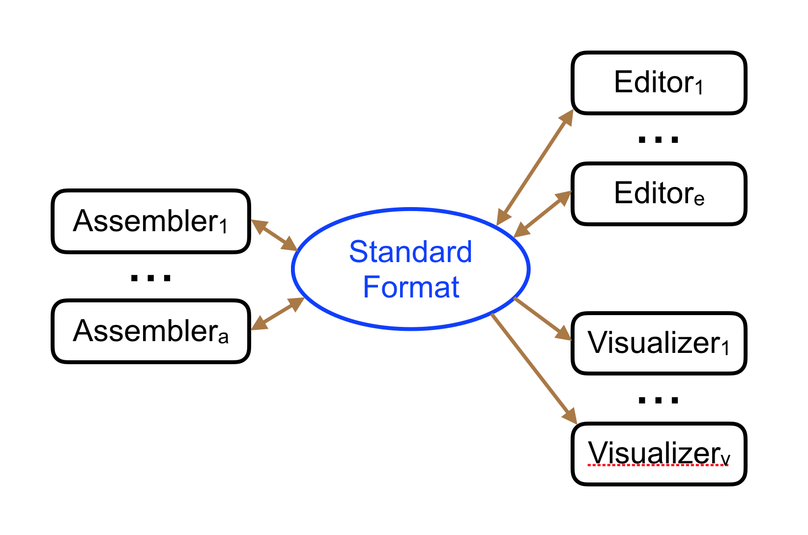
GFA1 Core Record Types
| Line Type | Name | Description |
|---|---|---|
H |
Header | File metadata and version |
S |
Segment | A DNA sequence node |
L |
Link | An edge connecting two segment ends |
P |
Path | An ordered walk through segments |
Example GFA1 file:
H VN:Z:1.0
S 1 CAAATAAG
S 2 A
S 3 G
S 4 TTG
S 5 AAATTTTCTGGAGTTCTAT
L 1 + 2 + 0M
L 1 + 3 + 0M
L 2 + 4 + 0M
L 3 + 4 + 0M
L 4 + 5 + 0M
P ref 1+,2+,4+,5+ *
P alt 1+,3+,4+,5+ *This encodes a simple bubble: segments 2 and 3 are alternatives between segments 1 and 4, representing a SNP. Path ref traverses 1→2→4→5; path alt traverses 1→3→4→5.
GFA2 Extensions
GFA2 generalizes GFA1 with:
- E lines: Unified edges replacing L (link) and C (containment) lines
- F lines: Fragment-to-segment mappings (reads to assembly)
- G lines: Gaps for scaffolding
- O/U lines: Ordered and unordered groups replacing P lines
rGFA: Reference-Anchored Graphs
Heng Li introduced rGFA (reference GFA) with minigraph [8]. rGFA is a strict subset of GFA1 that maintains stable coordinates via three mandatory segment tags:
SN:Z:— stable sequence name (e.g., chromosome)SO:i:— offset on the stable sequenceSR:i:— rank (0 = reference backbone, >0 = non-reference alleles)
This enables reference-compatible coordinate systems within graph structures—each base is uniquely indexed by (SN, SO).
4. Pangenome Graph Construction: Two Philosophies
Two major pipelines dominate pangenome graph construction, representing fundamentally different philosophies:
Overview
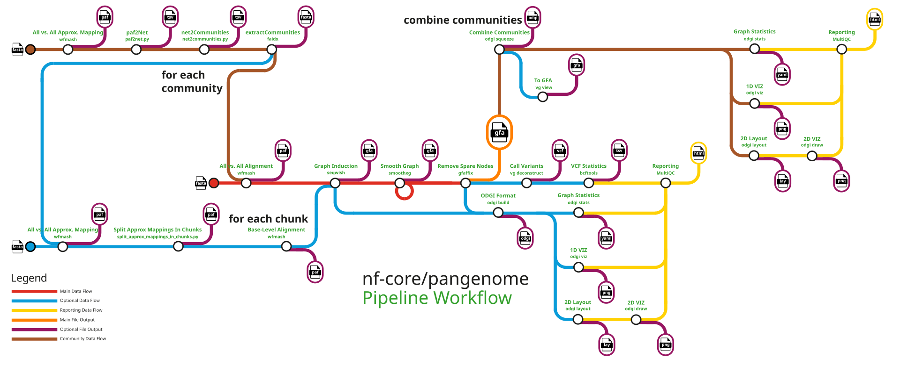
5. PGGB: The Reference-Free Approach
PGGB (PanGenome Graph Builder) constructs pangenome graphs without privileging any input genome [9]. All genomes are treated equally through all-to-all alignment.
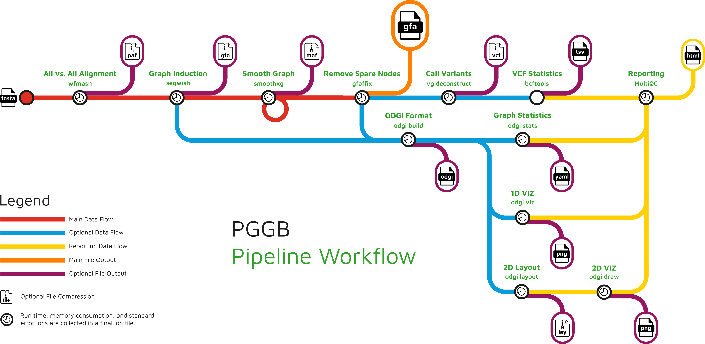
Step 1: All-to-All Alignment with wfmash
wfmash computes base-level pairwise alignments between all input sequences [10]:
- Approximate mapping using locality-sensitive hashing (MashMap3) to find homologous regions
- Base-level alignment using the Wavefront Alignment Algorithm (WFA) [11]—an algorithm running in \(O(ns)\) time where \(s\) is the alignment score, exploiting sequence similarity for speed
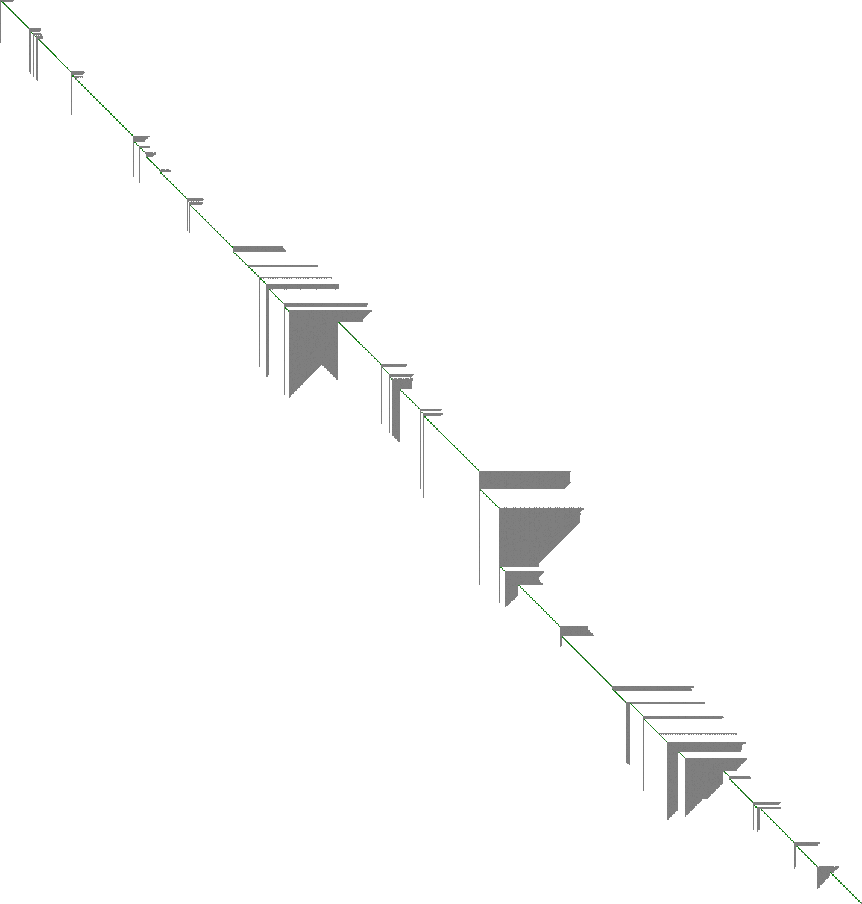
The output is a set of pairwise alignments in PAF format with CIGAR strings.
Step 2: Graph Induction with seqwish
seqwish converts pairwise alignments into a variation graph [12]:
- Takes alignment matches and transforms them into an implicit interval tree
- Collapses transitive matches: if A aligns to B and B aligns to C at the same position, the three are merged into a single node
- Produces a GFA graph where every input base appears exactly once
- No reference bias: no genome is privileged
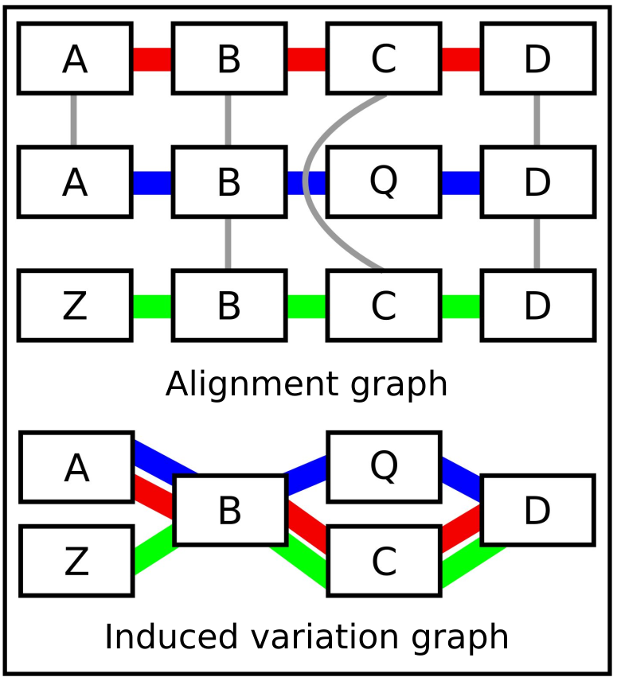
Step 3: Graph Smoothing with smoothxg
The Problem: Underalignment
The raw graph from seqwish is correct—every base is placed exactly once, and all alignment relationships are preserved—but it is not clean. Because seqwish works from pairwise alignments that may disagree at their boundaries, the graph often contains underalignment artifacts: regions where truly homologous positions end up in separate nodes instead of being collapsed into one.
Consider three sequences that share a 100 bp region. If the pairwise alignment of A↔︎B covers positions 1–100 and B↔︎C covers positions 5–95, seqwish will correctly merge positions 5–95 into shared nodes but leave positions 1–4 and 96–100 split. The result is a graph that is more complex than necessary—extra nodes and edges that represent alignment boundary artifacts rather than real biological variation.
This matters because downstream tools (variant calling, visualization, read mapping) all work better on a graph where shared sequence is maximally collapsed.
The Solution: Block-Based Partial Order Alignment
smoothxg resolves underalignment by re-aligning paths through the graph in local blocks:
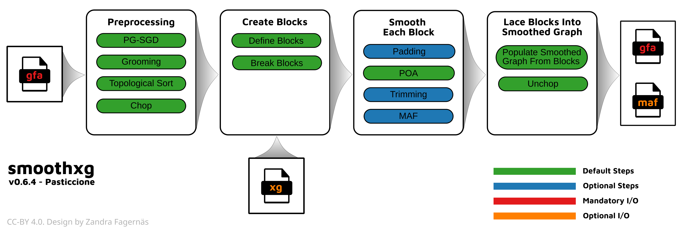
Step-by-step:
Preprocessing: The graph is sorted using PG-SGD (path-guided stochastic gradient descent) to find a good 1D ordering of nodes, then “chopped” so that no single node is too long. This creates a well-ordered graph where collinear blocks can be identified
Block identification:
smoothxgwalks along the sorted graph and groups consecutive nodes into collinear blocks—contiguous regions where multiple paths run in parallel. A block is a subgraph where all paths traverse roughly the same set of nodes in the same order. Blocks are broken at points where paths diverge significantly (large structural variants, rearrangements)POA within each block: Each block is extracted and the paths through it are re-aligned using Partial Order Alignment (POA). POA is a multiple sequence alignment method that aligns sequences to a directed acyclic graph (DAG) rather than to a single sequence. Starting from the first path, each subsequent path is aligned to the growing POA graph, progressively building a consensus DAG. This produces a locally optimal multiple alignment that collapses all shared positions into single nodes
Consensus generation: POA produces consensus paths through each block. These consensus sequences are new—they represent the multiple alignment’s view of the shared structure
Lacing blocks together: The smoothed blocks are stitched back into a complete graph. An “unchop” step merges adjacent nodes with single in/out edges back into longer segments
Iteration: Because block boundaries are somewhat arbitrary, a single pass may leave artifacts at the seams between blocks.
smoothxgiterates multiple passes, shifting block boundaries each time, to clean up edge effects
Before and After
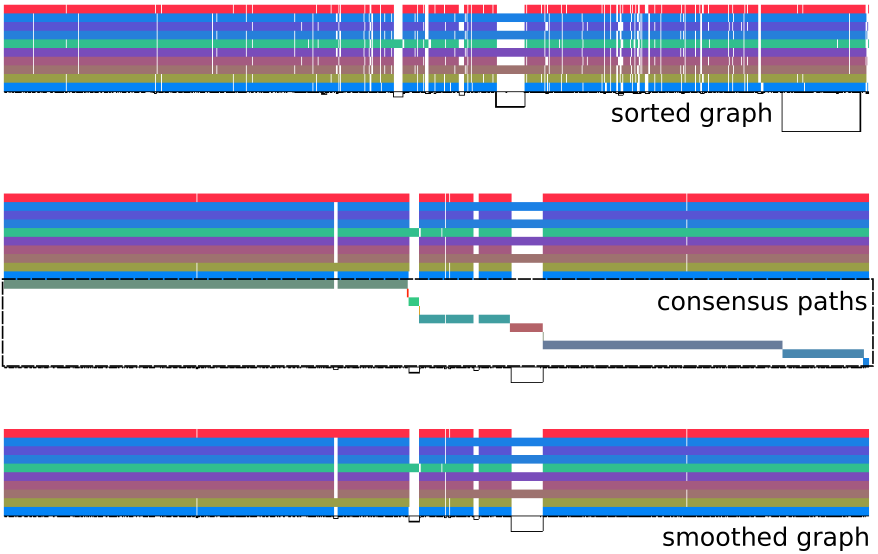
odgi viz. Top (“sorted graph”): the raw seqwish output after sorting—note the chaotic region in the middle where paths are fragmented and misaligned. Middle (“consensus paths”): POA-derived consensus paths for each block, showing the re-aligned structure. Bottom (“smoothed graph”): the final smoothed graph—paths are more regular, and the fragmented middle region has been resolved into clean variation. Source: PGGB GitHub repository.Why Not Just Run Multiple Sequence Alignment Directly?
A reasonable question: why not skip seqwish and run a standard MSA on all input sequences? Two reasons:
- Scale: MSA algorithms are quadratic or worse in the number/length of sequences. For human-scale pangenomes (90+ haplotypes × 3 Gbp), global MSA is intractable. By first building a rough graph (seqwish) and then smoothing in local blocks,
smoothxgkeeps the problem tractable - Structure preservation: Global MSA forces a linear coordinate system. The graph from seqwish already captures large-scale structural variation (inversions, translocations).
smoothxgrefines the local alignment without destroying the global graph topology
Step 4: Normalization with gfaffix
gfaffix performs final cleanup by collapsing trivially identical bubbles—cases where both paths through a fork have identical sequences.
Visualization with odgi
ODGI (Optimized Dynamic Genome/Graph Implementation) [13] provides efficient tools for pangenome graph manipulation and visualization:
odgi viz: 1D linearized visualization showing path coverage, depth, and structural variationodgi layout+odgi draw: 2D force-directed graph layouts
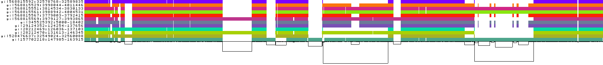
odgi viz. Each horizontal band is a haplotype path; colors indicate orientation and position. White gaps show structural variants. Source: PGGB GitHub repository.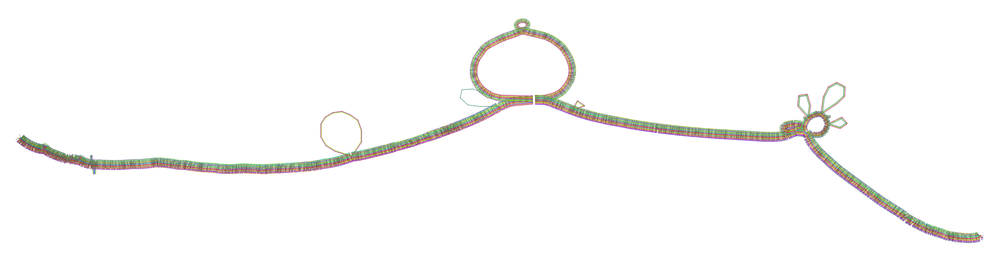
odgi layout and odgi draw. Source: PGGB GitHub repository.6. Minigraph-Cactus: The Reference-Guided Approach
Minigraph-Cactus [14] takes a fundamentally different approach: it builds the pangenome graph progressively, starting from a reference backbone.
Pipeline Overview
The pipeline has five major steps:
Step 1: SV Graph Construction with Minigraph
Starting with a chosen linear reference, minigraph [8] iteratively adds input assemblies:
- Maps each assembly against the current graph using a minimap2-like algorithm
- Identifies structural variants (insertions, deletions, inversions ≥50 bp)
- Adds them as bubbles in the graph
- Output: an rGFA graph capturing structural variation but lacking base-level detail
Step 2: Chromosome-Level Cactus Alignment
All haplotypes are mapped back to the SV graph, split by chromosome, and aligned using Progressive Cactus [15]:
- Uses a phylogenetic guide tree to decompose the problem
- Recursively aligns subsets of genomes
- Augments the SV graph with SNPs and small indels
- Achieves linear runtime scaling with genome count
Step 3: Graph Filtering and Clipping
Low-confidence regions (centromeres, assembly artifacts) are filtered. Paths are clipped to remove problematic endpoints.
Step 4: Indexing with GBWT/GBZ
The Graph Burrows-Wheeler Transform (GBWT) [16] indexes haplotype paths through the graph using run-length compressed BWTs. The GBZ format provides a compressed graph representation for efficient read mapping with vg Giraffe [17].
Step 5: Variant Calling
vg deconstruct identifies snarls (sites of variation in the graph) and calls variants by examining which haplotype paths traverse each snarl. Outputs phased VCF.
PGGB vs. Minigraph-Cactus
| Aspect | PGGB | Minigraph-Cactus |
|---|---|---|
| Philosophy | Reference-free | Reference-guided |
| Alignment | All-to-all (wfmash) | Progressive (Cactus) |
| Reference bias | None—all genomes equal | Depends on chosen reference |
| Graph structure | May contain cycles | Acyclic on reference path |
| Scalability | Computationally heavier (all-to-all) | Scales well to 90+ haplotypes |
| Output formats | GFA, VCF, odgi visualizations | GFA, HAL, VCF, GBZ indexes |
| Best for | Small-medium sets; unbiased analysis | Large-scale human pangenomes |
Both pipelines were used by the Human Pangenome Reference Consortium (HPRC) to construct the draft human pangenome reference [18].
7. The Human Pangenome Reference
The Human Pangenome Reference Consortium (HPRC) [19] aims to create a graph-based reference representing global human genomic diversity.
Key Milestones
Year 1 release (Liao et al. 2023 [18]): 47 phased diploid assemblies from diverse individuals, adding:
- 119 Mbp of euchromatic polymorphic sequence not in GRCh38
- 1,115 gene duplications
- 34% reduction in small variant errors
- 104% increase in structural variant detection
This work built on the T2T-CHM13 complete human genome [20] which added ~200 Mbp of previously inaccessible sequence including centromeres, demonstrating why complete assemblies—not draft genomes—are essential pangenome inputs.
The vg Toolkit
The vg (variation graph) toolkit [21] provides the computational foundation for working with pangenome graphs:
- vg construct: Build graphs from VCF + reference
- vg map / vg Giraffe: Map reads to pangenome graphs
- vg call / vg deconstruct: Call variants from graph alignments
- vg pack / vg surject: Convert graph alignments back to linear coordinates
Sequence Tube Maps
The Sequence Tube Map [22] visualizes pangenome graphs using the London Underground metaphor: paths through the graph are drawn as colored transit lines, with variants appearing as diverging routes.
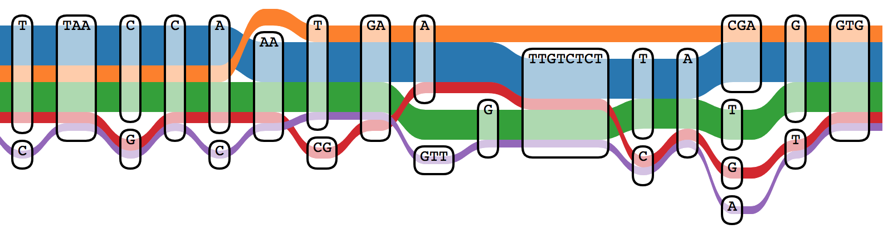
8. Applications to Bacterial Genomics
Gene-Oriented Bacterial Pangenomics
Bacterial pangenomics originated with Tettelin et al. [2] and has become routine in microbial genomics. The gene-oriented approach—clustering orthologous genes across annotated genomes to produce presence/absence matrices—remains dominant. Three tools define the landscape:
Roary: Fast Large-Scale Pangenome Analysis
Roary [3] was the first tool to make large-scale prokaryotic pangenome analysis practical. It processes thousands of annotated genomes in hours on a single CPU.
Algorithm
Roary takes annotated assemblies in GFF3 format (typically from Prokka) and proceeds through five steps:
- Pre-filtering: Extracts coding sequences from all input genomes and removes partial genes
- All-vs-all comparison: Uses CD-HIT to perform iterative clustering at decreasing identity thresholds (default: 95% for core, then down to the user-set minimum)
- Clustering with MCL: The Markov Cluster Algorithm groups remaining sequences into orthologous families based on BLASTp similarity
- Core gene alignment: Optionally produces a concatenated core gene alignment for phylogenetic analysis (using MAFFT or PRANK)
- Output generation: Produces a gene presence/absence matrix, summary statistics, and accessory gene graphs
Key Outputs
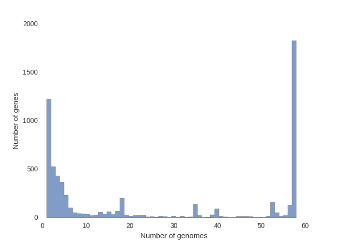
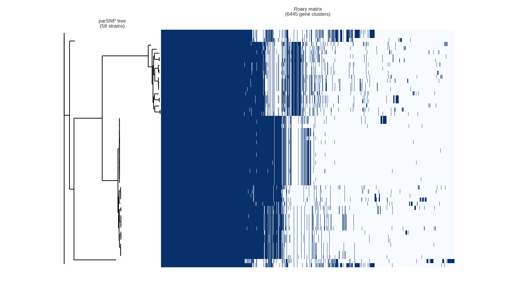
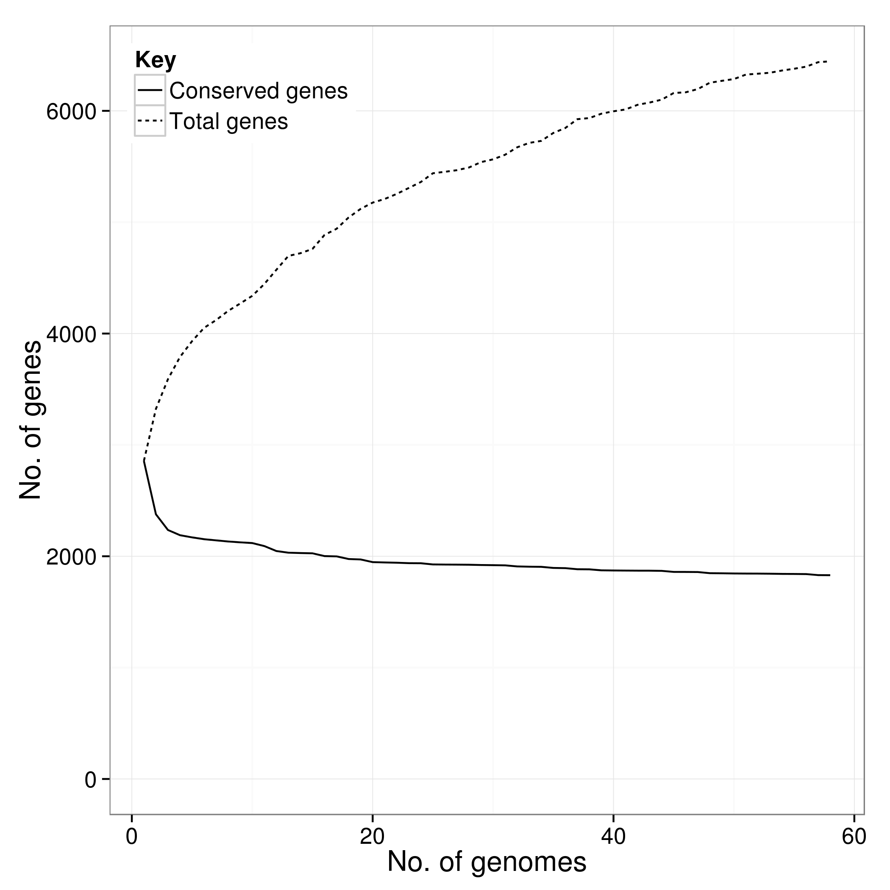
Strengths and Limitations
Roary is fast and widely cited (>6,000 citations), but has important limitations:
- Annotation sensitivity: Roary trusts input annotations completely. If a gene annotator fragments a gene, mis-calls a start codon, or misses a gene entirely, Roary propagates the error into the pangenome
- No error correction: Unlike Panaroo, there is no mechanism to detect or fix annotation artifacts
- Fixed identity threshold: The percent identity cutoff for “same gene” is global, which can be problematic for species with highly variable evolutionary rates across loci
Roary is officially unmaintained as of 2020. For new analyses, Panaroo or PPanGGOLiN are recommended.
Panaroo: Error-Correcting Pangenome Analysis
Panaroo [4] was designed to solve the annotation error problem that plagues Roary and similar tools. Tonkin-Hill et al. demonstrated that annotation errors cause nearly an order of magnitude more false gene clusters in existing tools.
The Problem: Annotation Errors
Bacterial gene annotation is imperfect. Common errors include:
- Gene fragmentation: A single gene split into two or more ORFs (due to sequencing errors, frameshifts, or assembly breaks)
- Gene fusion: Two adjacent genes merged into one ORF
- Missed genes: Real genes not called by the annotator
- Contamination: Genes from contaminant sequences included in the assembly
- Inconsistent start codons: The same gene called with different start positions in different genomes
These errors propagate into pangenome analyses, inflating the accessory genome and corrupting downstream statistics.
Algorithm: The Gene Neighborhood Graph
Panaroo’s key innovation is constructing a gene neighborhood graph and using its structure to detect and correct errors:
- Initial clustering: Genes are clustered by sequence similarity (like Roary)
- Graph construction: A graph is built where nodes are gene clusters and edges connect genes that are adjacent on a contig. Edge weights reflect how many genomes support the adjacency
- Error correction via graph surgery:
- Trailing end errors: Genes near contig ends that appear in only one genome are flagged and removed
- Gene fragmentation: Adjacent nodes in the graph whose sequences, when concatenated, match a single gene in other genomes are merged
- Contamination: Genes appearing in a single genome with no graph neighbors from that genome are removed
- Missing genes: If a gene is absent in a genome but its graph neighbors are present, Panaroo searches the intergenic sequence for the missing gene using a sensitive re-BLASTing step
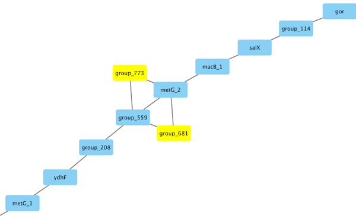
Key Features
- Modes of stringency: Strict, moderate, and sensitive modes trade off between removing false positives and retaining rare genuine genes
- Structural variant detection: The graph structure reveals large-scale rearrangements, inversions, and gene order changes
- Pangenome merging: Can incrementally add new genomes to an existing pangenome graph without recomputing everything
- Gene neighborhood analysis: The graph directly supports neighborhood-based queries—“what genes are always found next to gene X?”
Performance
In benchmarks against Roary, PanX, COGsoft, and PPanGGOLiN, Panaroo produced nearly an order of magnitude fewer errors on simulated datasets with realistic annotation noise [4].
PPanGGOLiN: Partitioned Pangenome Graphs
PPanGGOLiN (Partitioned PanGenome Graph Of Linked Neighbors) [5] takes a fundamentally different approach: rather than simply classifying genes as “core” or “accessory” based on arbitrary frequency thresholds, it uses a statistical model that accounts for genomic context.
The Core Idea: Context-Aware Partitioning
Traditional pangenome tools classify genes based on frequency alone: if a gene is in >95% of genomes, it is “core”; otherwise, “accessory.” This binary split is arbitrary—the threshold dramatically affects results, and there is no principled way to choose it.
PPanGGOLiN solves this with a three-way statistical partition:
- Persistent genome: Genes present in (nearly) all genomes—the true functional core
- Shell genome: Genes present in a moderate fraction of genomes—often lifestyle-associated, niche-specific, or mobile
- Cloud genome: Genes present in very few genomes—strain-specific, often acquired via horizontal gene transfer
Algorithm
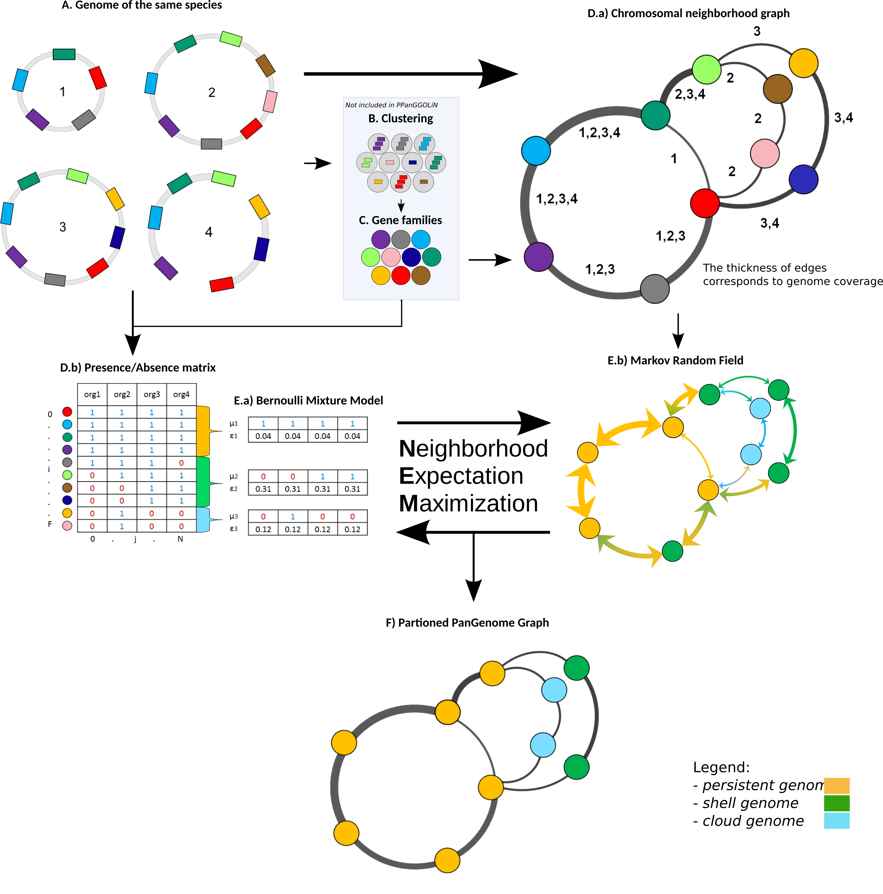
The pipeline has four major stages:
Gene family construction: Genes from all input genomes are clustered into families using MMseqs2 (fast and sensitive sequence clustering)
Graph construction: A graph is built where:
- Nodes = gene families
- Edges = genomic adjacency (two gene families are connected if their member genes are neighbors on a contig)
- Edge weights reflect the number of genomes supporting the adjacency
Statistical partitioning via Neighborhood Expectation Maximization (NEM):
- A Bernoulli Mixture Model (BMM) models the presence/absence pattern of each gene family across genomes as a mixture of three components (persistent, shell, cloud)
- A Markov Random Field (MRF) incorporates the graph structure: neighboring gene families in the graph tend to belong to the same partition. This is the key innovation—genomic context informs classification
- The EM algorithm iterates between assigning gene families to partitions (E-step) and updating partition parameters (M-step)
Output generation: The partitioned pangenome graph, along with statistics, gene families, and visualizations
Visualizations
PPanGGOLiN produces several diagnostic plots:
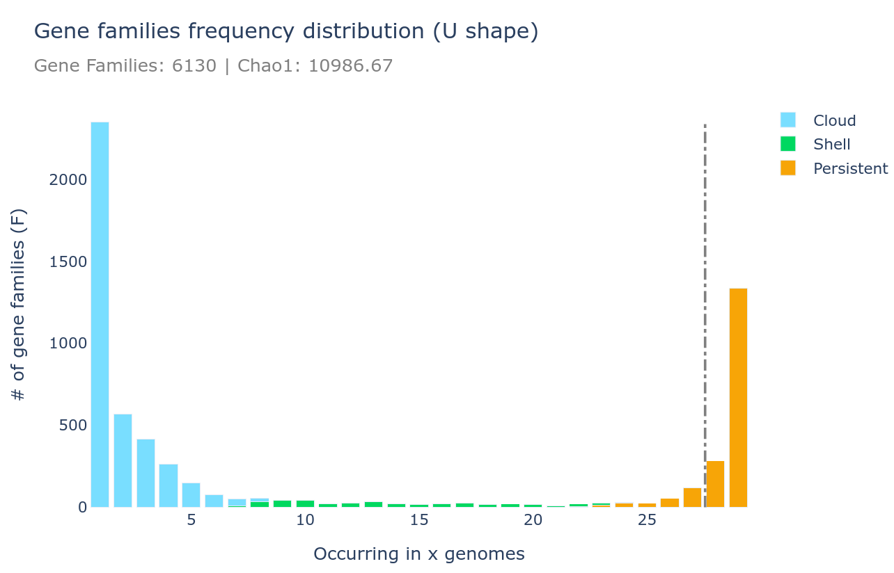
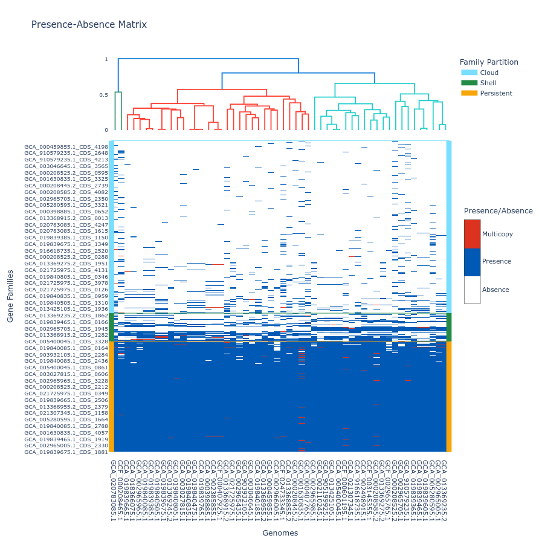
Key Features
- Works with MAGs and SAGs: Unlike tools requiring complete genomes, PPanGGOLiN handles metagenome-assembled genomes (MAGs) and single-cell amplified genomes (SAGs) where some genes are missing due to incomplete assembly
- Spot detection: Identifies “spots”—regions of genomic plasticity where gene content varies across strains (often insertion hotspots for mobile elements)
- Module detection: Finds sets of co-occurring genes that are gained/lost together, suggesting functional units or mobile genetic elements
- Scalable: Tested on 439 species in the original publication
Comparison of Gene-Oriented Tools
| Feature | Roary | Panaroo | PPanGGOLiN |
|---|---|---|---|
| Clustering | CD-HIT + MCL | BLASTp + MCL | MMseqs2 |
| Error correction | None | Graph-based surgery | None (but robust to incomplete genomes) |
| Partitioning | Frequency threshold | Frequency threshold | Statistical (BMM + MRF) |
| Graph structure | Accessory gene graph | Gene neighborhood graph | Partitioned neighborhood graph |
| MAG/SAG support | No | Limited | Yes |
| Speed (1,000 genomes) | ~4.5 hours | ~6 hours | ~2 hours |
| Maintained | No (since 2020) | Yes | Yes |
Graph-Based Bacterial Pangenomics
Recent work applies sequence-graph approaches to bacteria:
- Colquhoun et al. [23] applied PGGB to Neisseria meningitidis genomes from Oxford Nanopore data, demonstrating improved mapping rates and novel structural variant detection compared to single linear references
- PanKA [24] combines pangenome features (gene presence/absence, AMR gene k-mer profiles, core gene amino acid variants) with machine learning for antibiotic resistance prediction in E. coli and K. pneumoniae
- Lees et al. [25] showed that accessory genome content from pangenome analyses contributes to AMR prediction beyond known resistance genes
AMR and Outbreak Tracking
Pangenome analysis is increasingly used for:
- AMR gene detection: Accessory genome analysis reveals resistance determinants beyond known genes
- Outbreak tracking: Core genome SNPs + accessory gene presence/absence patterns provide higher resolution than MLST
- Horizontal gene transfer: Pangenome graphs naturally represent mobile genetic elements
10. Visualization Tools
Bandage
Bandage [30] provides interactive visualization of assembly and pangenome graphs. It reads GFA, supports zoom/pan, BLAST integration, and node coloring.
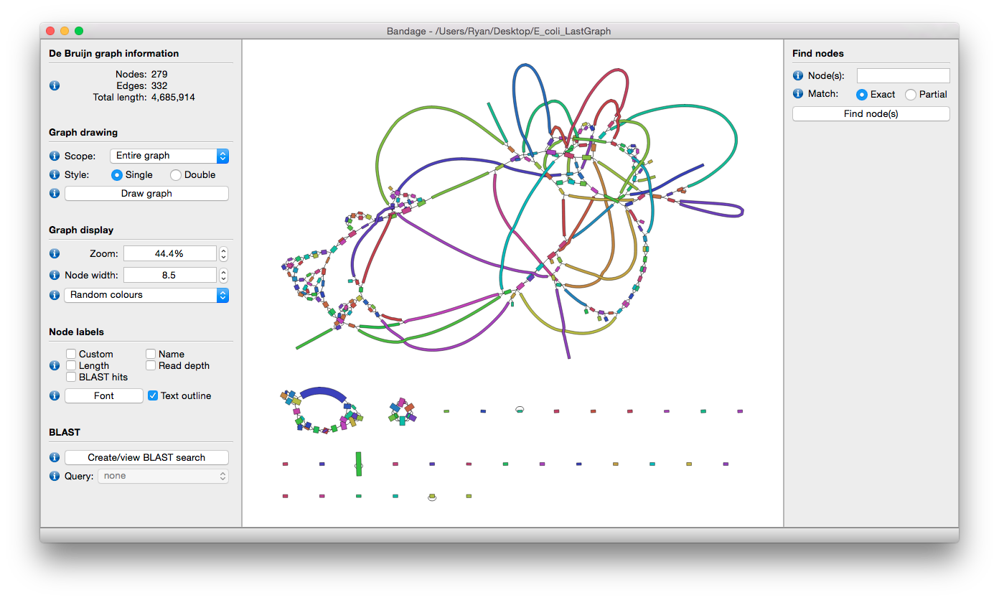
GfaViz
GfaViz [31] supports both GFA1 and GFA2 formats with force-directed and hierarchical layouts. Export to raster and vector graphics.
ODGI Visualizations
As shown in Section 5, odgi viz and odgi layout produce publication-quality 1D and 2D pangenome visualizations directly from GFA files. The PGGB pipeline automatically generates these.
Sequence Tube Map
The Sequence Tube Map [22] (shown in Section 7) renders pangenome graphs as transit-style diagrams, making complex graph structures intuitive for non-specialists.
11. Summary
| Concept | Key Point |
|---|---|
| Pangenome | Complete genomic content of a species/population |
| Core genome | Shared by all individuals |
| Accessory genome | Present in some individuals |
| GFA format | Standard for representing sequence graphs |
| PGGB | Reference-free: all-to-all alignment → graph |
| Minigraph-Cactus | Reference-guided: progressive alignment → graph |
| vg toolkit | Read mapping and variant calling on graphs |
| HPRC | Human pangenome from 47 diploid assemblies |
The Future
Pangenomics is rapidly maturing. Current directions include:
- Scaling to thousands of human genomes (HPRC Year 2+)
- Integration with long-read sequencing for complete haplotype resolution
- Super-pangenomes spanning entire genera [32]
- Clinical adoption for variant calling and pharmacogenomics
- Real-time outbreak surveillance using graph-based representations
References
The Computational Pan-Genomics Consortium. Computational pan-genomics: status, promises and challenges. Briefings in Bioinformatics 19(1):118-135 (2018). DOI: 10.1093/bib/bbw089
Tettelin H, Masignani V, Cieslewicz MJ, et al. Genome analysis of multiple pathogenic isolates of Streptococcus agalactiae: implications for the microbial “pan-genome”. PNAS 102(39):13950-13955 (2005). DOI: 10.1073/pnas.0506758102
Page AJ, Cummins CA, Hunt M, et al. Roary: rapid large-scale prokaryote pan genome analysis. Bioinformatics 31(22):3691-3693 (2015). DOI: 10.1093/bioinformatics/btv421
Tonkin-Hill G, MacAlasdair N, Ruis C, et al. Producing polished prokaryotic pangenomes with the Panaroo pipeline. Genome Biology 21:180 (2020). DOI: 10.1186/s13059-020-02090-4
Gautreau G, Bazin A, Gachet M, et al. PPanGGOLiN: depicting microbial diversity via a partitioned pangenome graph. PLOS Computational Biology 16(3):e1007732 (2020). DOI: 10.1371/journal.pcbi.1007732
Eizenga JM, Novak AM, Sibbesen JA, et al. Pangenome Graphs. Annual Review of Genomics and Human Genetics 21:139-162 (2020). DOI: 10.1146/annurev-genom-120219-080406
GFA Format Specification. https://github.com/GFA-spec/GFA-spec
Li H, Feng X, Chu C. The design and construction of reference pangenome graphs with minigraph. Genome Biology 21:265 (2020). DOI: 10.1186/s13059-020-02168-z
Garrison E, Guarracino A, Heumos S, et al. Building pangenome graphs. Nature Methods 21:2008-2012 (2024). DOI: 10.1038/s41592-024-02430-3
Guarracino A, Mwaniki N, Marco-Sola S, Garrison E. wfmash. Zenodo (2024). DOI: 10.5281/zenodo.13629309
Marco-Sola S, Moure JC, Moreto M, Espinosa A. Fast gap-affine pairwise alignment using the wavefront algorithm. Bioinformatics 37(4):456-463 (2021). DOI: 10.1093/bioinformatics/btaa777
Garrison E, Guarracino A. Unbiased pangenome graphs. Bioinformatics 39(1):btac743 (2023). DOI: 10.1093/bioinformatics/btac743
Guarracino A, Heumos S, Nahnsen S, Prins P, Garrison E. ODGI: understanding pangenome graphs. Bioinformatics 38(13):3319-3326 (2022). DOI: 10.1093/bioinformatics/btac308
Hickey G, Monlong J, Ebler J, et al. Pangenome graph construction from genome alignments with Minigraph-Cactus. Nature Biotechnology 42:663-673 (2024). DOI: 10.1038/s41587-023-01793-w
Armstrong J, Hickey G, Diekhans M, et al. Progressive Cactus is a multiple-genome aligner for the thousand-genome era. Nature 587:246-251 (2020). DOI: 10.1038/s41586-020-2871-y
Siren J, Garrison E, Novak AM, Paten B. Haplotype-aware graph indexes. Bioinformatics 36(2):400-407 (2020). DOI: 10.1093/bioinformatics/btz575
Siren J, Monlong J, Chang X, et al. Pangenomics enables genotyping of known structural variants in 5202 diverse genomes. Science 374(6574):abg8871 (2021). DOI: 10.1126/science.abg8871
Liao WW, Asri M, Ebler J, et al. A draft human pangenome reference. Nature 617:312-324 (2023). DOI: 10.1038/s41586-023-05896-x
Wang T, Antonacci-Fulton L, Howe K, et al. The Human Pangenome Project: a global resource to map genomic diversity. Nature 604:437-446 (2022). DOI: 10.1038/s41586-022-04601-8
Nurk S, Koren S, Rhie A, et al. The complete sequence of a human genome. Science 376(6588):44-53 (2022). DOI: 10.1126/science.abj6987
Garrison E, Siren J, Novak AM, et al. Variation graph toolkit improves read mapping by representing genetic variation in the reference. Nature Biotechnology 36:875-879 (2018). DOI: 10.1038/nbt.4227
Beyer W, Novak AM, Hickey G, et al. Sequence Tube Map. Bioinformatics 35(24):5318-5320 (2019). DOI: 10.1093/bioinformatics/btz597
Colquhoun RM, et al. Pangenome graphs in infectious disease: a comprehensive genetic variation analysis of Neisseria meningitidis leveraging Oxford Nanopore long reads. Frontiers in Genetics 14:1225248 (2023). DOI: 10.3389/fgene.2023.1225248
Nguyen TH, et al. PanKA: Leveraging population pangenome to predict antibiotic resistance. iScience 27(9):110623 (2024). DOI: 10.1016/j.isci.2024.110623
Lees JA, Galardini M, Bentley SD, Weiser JN, Corander J. Prediction of antibiotic resistance in Escherichia coli from large-scale pan-genome data. PLOS Computational Biology 14(12):e1006258 (2018). DOI: 10.1371/journal.pcbi.1006258
Lau BT, Hooker AC, Sahoo MK, et al. Profiling SARS-CoV-2 mutation fingerprints that range from the viral pangenome to individual infection quasispecies. Genome Medicine 13:62 (2021). DOI: 10.1186/s13073-021-00882-2
Ode H, Matsuda M, Shigemi U, et al. Population-based nanopore sequencing of the HIV-1 pangenome to identify drug resistance mutations. Scientific Reports 14:12169 (2024). DOI: 10.1038/s41598-024-63054-3
Downing T. Approaches to studying virus pangenome variation graphs. Genomics Proteomics Bioinformatics (2025). arXiv:2412.05096
Downing T, et al. Panalyze: automated virus pangenome variation graph construction, analysis and annotation. bioRxiv (2025). DOI: 10.1101/2025.04.10.646565
Wick RR, Schultz MB, Zobel J, Holt KE. Bandage: interactive visualization of de novo genome assemblies. Bioinformatics 31(20):3350-3352 (2015). DOI: 10.1093/bioinformatics/btv383
Gonnella G, Niehus N, Kurtz S. GfaViz: flexible and interactive visualization of GFA sequence graphs. Bioinformatics 35(16):2853-2855 (2019). DOI: 10.1093/bioinformatics/bty1046
Secomandi S, et al. Pangenome graphs and their applications in biodiversity genomics. Nature Genetics 57(1):13-26 (2025). DOI: 10.1038/s41588-024-02029-6
Medini D, Donati C, Tettelin H, Masignani V, Rappuoli R. The microbial pan-genome. Current Opinion in Genetics & Development 15(6):589-594 (2005). DOI: 10.1016/j.gde.2005.09.006
Vernikos G, Medini D, Riley DR, Tettelin H. Ten years of pan-genome analyses. Current Opinion in Microbiology 23:148-154 (2015). DOI: 10.1016/j.mib.2014.11.016
Tettelin H, Medini D (editors). The Pangenome: Diversity, Dynamics and Evolution of Genomes. Springer (2020). DOI: 10.1007/978-3-030-38281-0
Hickey G, Paten B, Earl D, Zerbino D, Haussler D. HAL: a hierarchical format for storing and analyzing multiple genome alignments. Bioinformatics 29(10):1341-1342 (2013). DOI: 10.1093/bioinformatics/btt128
Matthews CA, Watson-Haigh NS, Burton RA, Sheppard AE. A gentle introduction to pangenomics. Briefings in Bioinformatics 25(6):bbae588 (2024). DOI: 10.1093/bib/bbae588
Heumos S, Heuer ML, et al. Cluster-efficient pangenome graph construction with nf-core/pangenome. Bioinformatics 40(11):btae609 (2024). DOI: 10.1093/bioinformatics/btae609